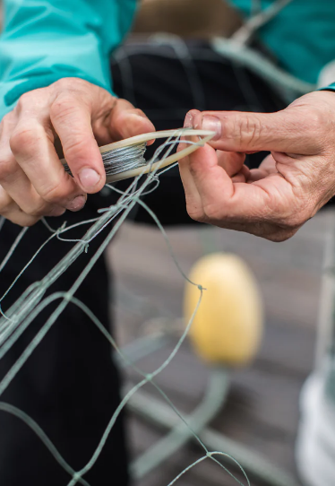
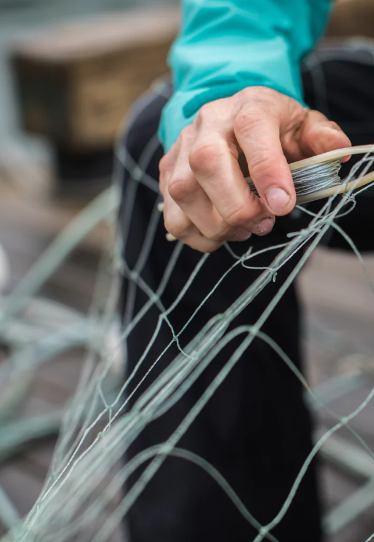
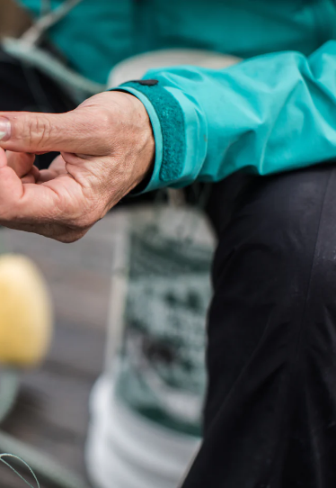

FAQ's
Your Questions Answered About Our Sustainable, Wild-Caught Seafood - From Our Fishermen to Your Doorstep.
Our customer support is available
Monday to Friday: 8am-8:30pm.Average answer time: 24h

How Does Fisherman Direct Work?
Fishermen Direct Seafood is an online retailer of sustainably sourced, wild-caught seafood. Customers can browse the selection of products on the company's website, select the items they want to purchase, and have them delivered to their doorstep or available for local pickup.
Learn More >

Who Are The Fishermen?
Fishermen Direct Seafood works with independent Alaskan fishermen who are committed to sustainable fishing practices. The company has longstanding relationships with these fishermen, and many have been supplying Fishermen Direct Seafood with high-quality seafood for years.
Learn More >

Where Is The Fish From?
Fishermen Direct Seafood's seafood is wild-caught from the waters of Alaska, which are known for their abundance of high-quality seafood.
Learn More >
How Are The Fish Caught
Fishermen Direct Seafood's fishermen use sustainable and environmentally responsible fishing methods to catch the seafood. These methods vary depending on the type of fish, but all are designed to minimize the impact on the environment and preserve the health of the fish populations.
Learn More >